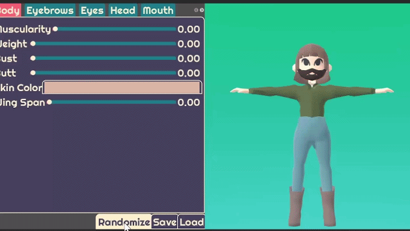
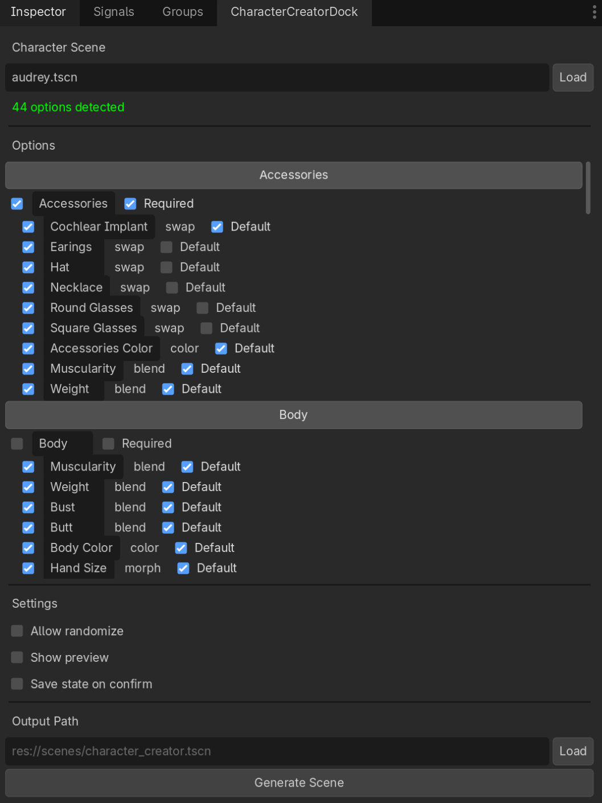
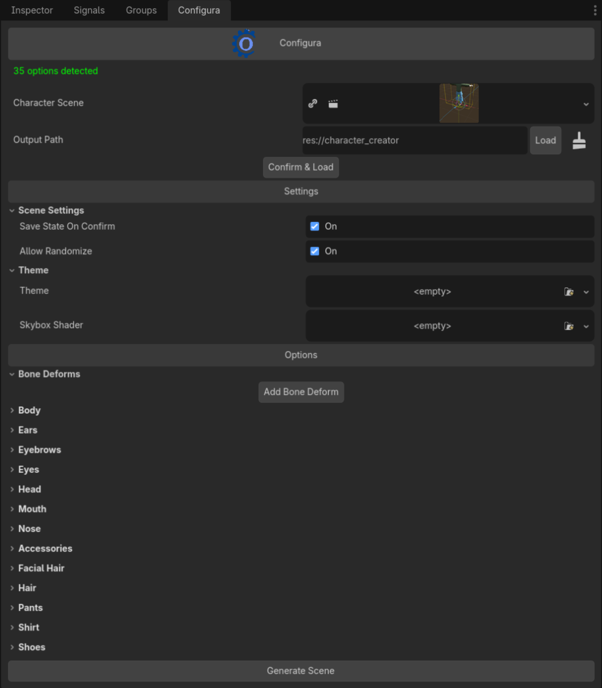
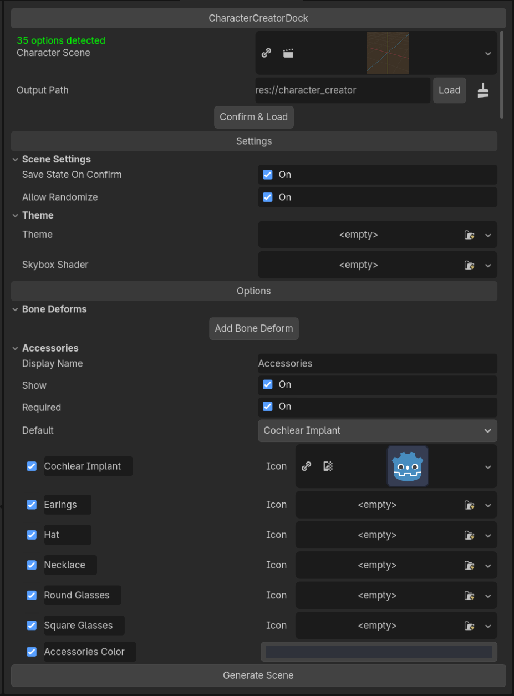
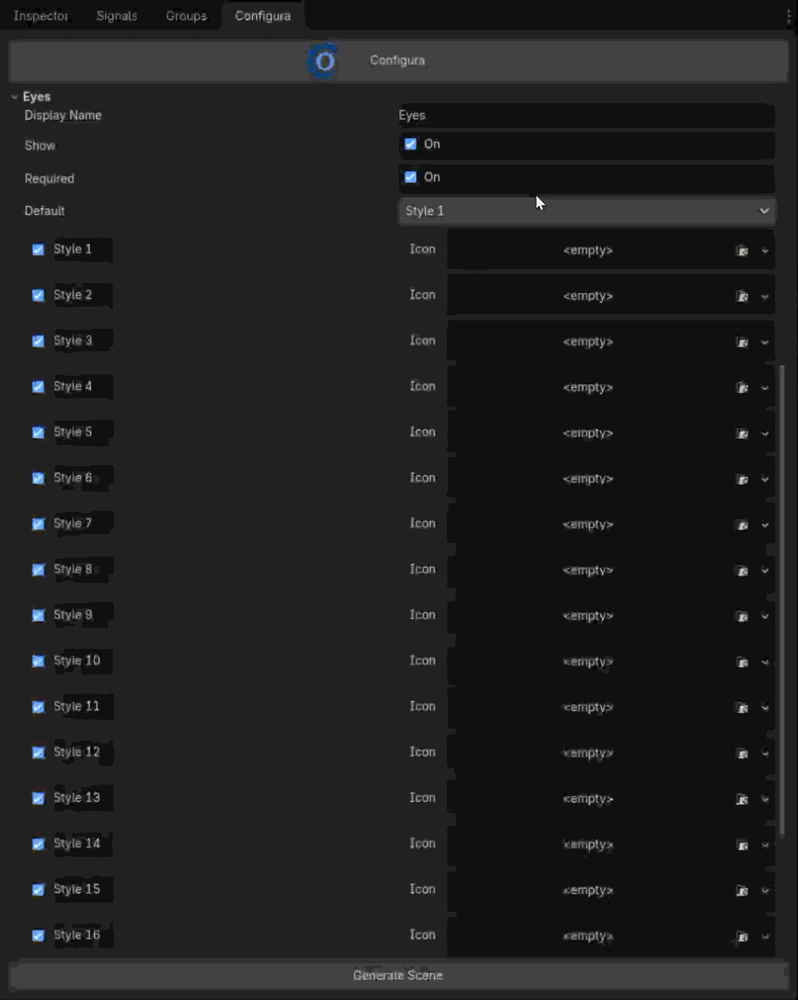
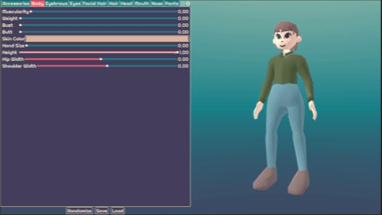
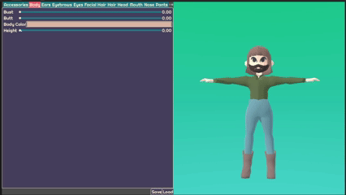
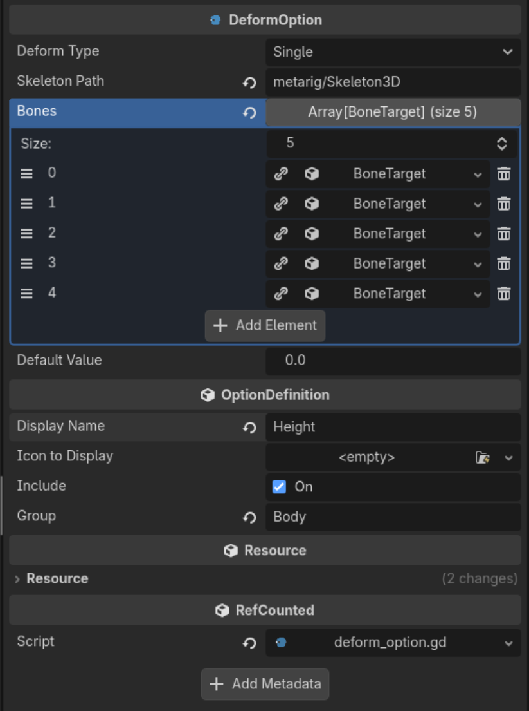
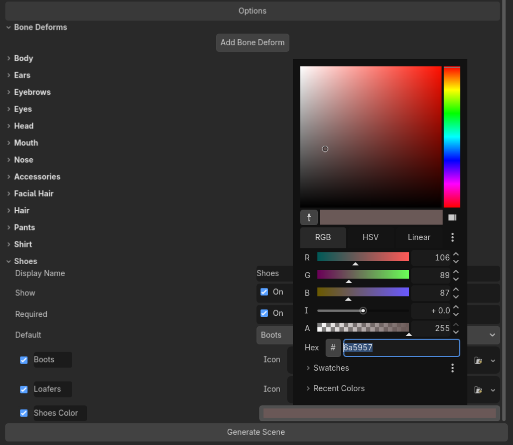

Configura
Character creator creation plugin
Flexible framework for building character creators. Allows developers to upload their own 3D model, parses through the options, then creates a character creator scene. Supports modular assets, mesh deformation, skeletal deformation, and materials.

Responsibilities
UI and Backend Developer
- Familiarized self with existing codebase.
- Overhauled existing UI for plugin dock to be more readable and more consistent with Godot inspector.
- Researched and implemented bone deformation feature, allowing users to deform their model's skeleton through code.
- Implemented color swatches, allowing users to preselect an array of colors to use in character creator.
- Consistently updated documentation throughout project to help users.
- Combed through entire codebase cleaning up code to follow good coding conventions, ensuring better team collaboration and improving code readability.
- Submitted reviews, approved pull requests, and merged branches on GitHub.
- Delivered a complete, viable product published to the Godot Asset Store, receiving 145+ downloads.
- Assisted in marketing and engaging with the community through Discord and Godot Forums.
- Continued with technical support, answering community questions.
Process
Overview
Configura began as "Figura", a project built by Audrey Fuller as her Computer Science Master's capstone project. She discovered that there were little to no tools that helped game developers create character creators, and was interested in providing this workflow between artist and developer. She submitted the project to MAGIC Spell Studios, and was accepted to the Traver Creative Technologist Program. This program is a funded entrepreneurism residency focused on technology solutions for creative industries, especially those that make multidisciplinary connections across technology, art, and business. This opened up the project to be further developed by our summer team.
Over the summer, I worked with 3 team members, using an Agile software prototyping process. During our first milestone, we focused on familiarizing ourselves with the codebase and taking note of what could be improved upon. We also refactored and optimized the code. In the second milestone, we began making bigger changes such as a UI overhaul, rebranding, and publishing to the Godot Asset Store. In our last milestone, we added color swatches, dynamic camera movement, and character name saving. Throughout the process, we were supported by the production team at MAGIC Spell Studios and met with the program's namesake John Traver, an RIT alumnus and creator of frame.io.
UI Overhaul
hi



hi
Options
hi

hi
Bone Deformations
hi




hi
Color Swatches
hi


hi